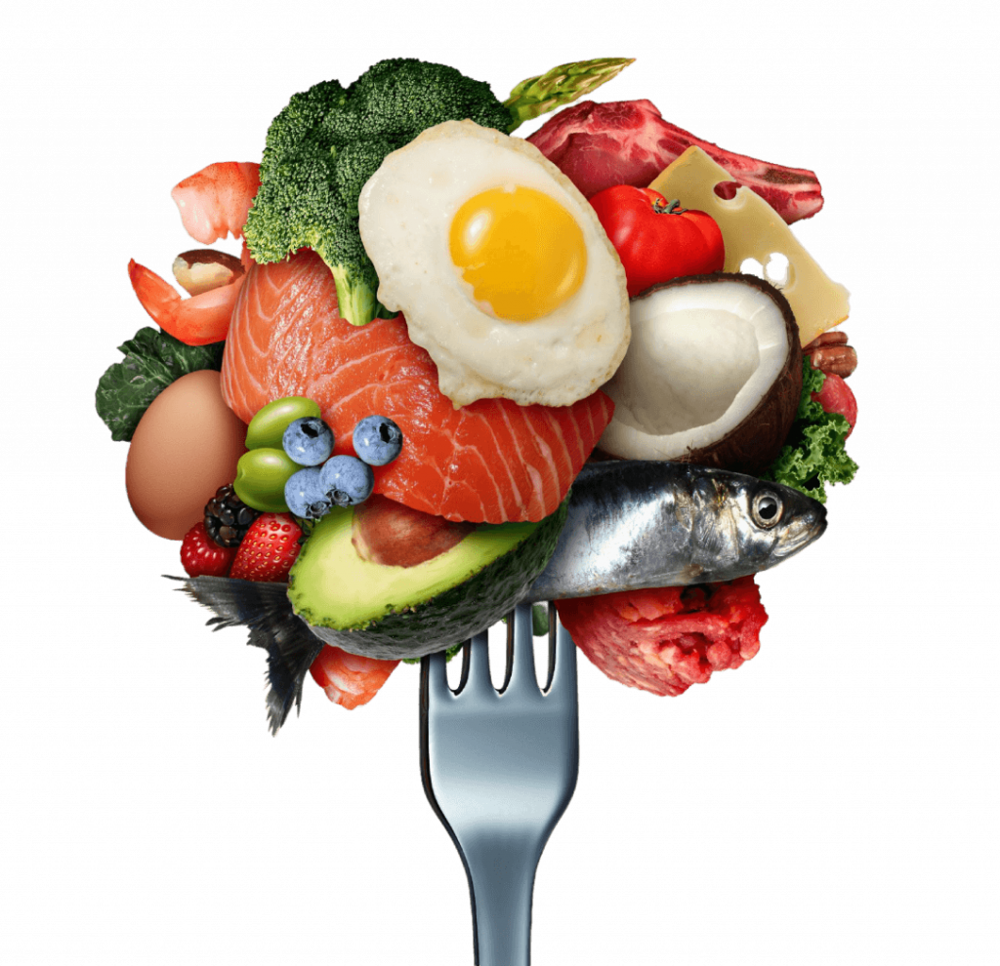

Prós e Contras da Dieta Lowcarb
Prós:
- Auxílio na perda de peso.
- Controle de Açúcar no Sangue.
- Redução de Triglicerídeos.
- Maior Saciedade.
- Melhoria no Perfil Lipídico
Contras:
- Possíveis efeitos colaterais(no início).
- Custo Elevado.
- Restrição Alimentar.
- Potencial para Ganha de peso caso você abandone a dieta.

Receitas Lowcarb
Escolha uma receita no menu abaixo: